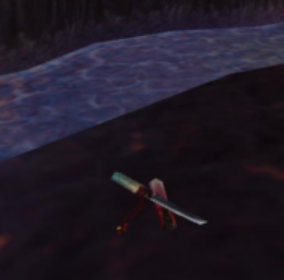
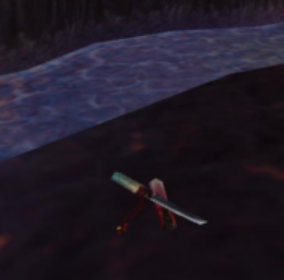

Non-dock Areas
Khotan Skyway has a few notable non-dock areas. There are three vortexes here, the Tai Foon Vortex, Vortex of Discord, and Vortex of Strife. Of particular note is the Tai Foon Vortex which houses Dr. Noh who has an interesting drop. There are some non-stagecoachable locations as well like Rokugara Island, Yama Kai, Minami Docks, and Nishi Dock. Please note that you can technically get to Nishi Dock by first using the stagecoach to go to Kita Dock and then traversing to Nishi Dock.
Zeke Quest Info!
There are three zeke collectibles in this skyway if you are doing his quest. There is one in Rokugara Island, one in Yama Kai, and one in Yakooza Cave.
Rokugara Island Knife
The knife is on the dock opposite of the life fountain.
Yakooza Cave Knife
 

The knife is at the back of the cave behind a broken ship.
Yama Kai Knife
The knife is along the edge of the larger building on the island. It is behind it on the right side.
Dr. Noh's Tunic


Dr. Noh's tunic is a drop from Dr. Noh in the Tai Foon Vortex. It gives 8 will, 5 accuracy, and 31 magic resist. Of more note is the fact it gives one copy of Mournsong, which is an infinite range spell that requires line of sight. It will do 1.9x your mojo in the initial hit and 1x your mojo in 2 rounds. This makes it a viable option for privateers and witchdoctors who use will and spooky, and it could even work for musketeers. It would be good in niche situations like when the fight objective is dispatching one boss enemy.